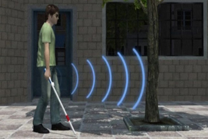

Claude-Noel Tamakloe
Result focused Engineering professional with strength in programming, electronic design,problem solving, design and project management. Proactive leader with strengths in communication and collaboration. Proficient in leveraging my skills and knowledge to promote efficient solutions to problems. Adept at managing concurrent objectives to promote efficiency and influence positive outcomes.
Experience
Software Developer II- AVP (Global Technology Division-FICC CPM)
- Building and maintaining enterprise data management, risk and PNL metrics tools to support the business in managing its Funding and counterparty credit risk.
- Integrated automated routines into the Banks Quarterly and yearly Regulatory reporting to support new risk scenarios presented by the FEDs.
- Improved the Comprehensive Intraday Risk Trading system for the XVA Desk by setting up configurations to support intraday pricing with live market data.
- Built a pipeline to source and report risk sensitivities and measures for Repo Trades
Software developer I (Global Technology Division - FICC CPM)
- Building and maintaining enterprise data management tools, risk and PNL metrics tools to support the business in managing its Funding and counterparty credit risk
- Built an intraday pricing report infrastructure to provide the business with the capability of making OnDemand PNL and delta request for live trades.
- Worked on a team to build a report system to renegotiate actual and standard CSAs for funding valuation Adjustment risk exposures.
- Built utility scripts to help report on needed updates on team Jira stories to meet standards set and flag issues team agile processes for sprint refinement purposes
Summer Analyst (Global Technology Division - FICC CPM)
- Worked on a team to develop a Bank Regulatory database search web application using Python and React frameworks
- Worked closely with the xVA team on the FICC-CPM desk on analysing counterparty credit risk and valuation adjustments.
- Worked on a team to develop a Social strategy to address a social problem in an Environmental-Social-Governmental(ESG) problem space
Faculty Intern (Engineering Department)
- Worked closely with team members to deliver project requirements, develop solutions and meet deadlines
- Working with lead faculty to impact knowledge in Embedded Systems, Communication Systems and Digital Systems
- Helping Students understand the principles of project management and its application following guidelines from the PMBOK Guide
- Working with and helping students design and understand Embedded Systems, Communication systems and Digital System Design
Projects and Engineering Intern
- Reviewed and interpreted engineering blueprints and drawings to determine best approaches to project
- Completed projects with senior Engineers and offered personal insight
- Supported senior Engineers by organizing presentations using powerpoint
- Worked on developing a web-portal framework to integrate the company's services using AdonisJS
Design Lab Member
- Created agenda materials and communications for team meetings
- Worked closely with team members to deliver project requirements, develop solutions and meet deadlines
- Led a team of 5 to research on mobile utility to find the best application in the telecommunication Industry.
- Generated a model, to effectively manage home electricity using mobile applications.
Education
Ashesi University
Magna Cum-Laude
Achimota Senior High
Skills
- Project Management
- Engineering Project Design
- VHDL programming
- Team Work
- 3D modelling in Solidworks
Projects & Research
Repo Trades Risk Sensitivity and Measure Reporting Tool
Designed and developed and maintaining pipeline for sourcing and reporting risk sensitivities and measures for Repo Trades
Counterparty Portfolio Management (CPM) Chat Bot
Built and maintained an interactive chat bot to support the CPM business with day to day activities
OnDemand Intraday PNL reporting for XVA Desk
Designed and developed an effective OnDemand reporting system for intraday reporting of trade activity to support XVA Desk in PNL reporting
Smart Waste Management System
Designed and developed a smart waste management system, comprised of a solar powered smart bin and a web application to provide an efficient approach to waste management in rural and urban areas. The prototype smart bin is capable of monitoring internal rubbish levels, compact it, freeing approximately 25 percent of the space with each compaction. The bin also monitors total weight and is capable of sending all these information to a secure server side application. The accompanying web application monitors the state of each smart bin and proposes optimal routes for pick up. This approach will contribute to a smart and efficient waste disposal improving the cites waste management. Project Poster
Smart Walking stick
Worked as the project engineer with a team of 8 students to develop a smart device to aid the movement of the blind in the society. Understanding the stress and hustle of the visually impaired when it comes to movement through indepth research and individual interviews , the team set out to design and build a system that will be cost effective and be very efficient in helping the blind navigate around obstacles in the environment. Project Demo
International Genetically Engineered Machine (IGEM) Competition
Worked on a team of 8 students to research and genetically engineer a biological device to detect and quantify the presence of gold in refractory ores, to enhance gold liberation and provide an alternative for small scale mining in Ghana Project Page
Smart Speed Detector System

With the rising cases of road accidents, there is the need to develop systems that will enhance road safety and ensure that rules, and regulations set to ensure general safety of road users are adhered to. Hence this project focused on designing and building a smart Speed detector system to alert authorities on vehicle speed violations. Project Page
Movable Solar Generator
Co-lead a team to design and build a movable solar generator to serve as a source of power for basic home appliances in rural areas.
Interests
Apart from being an Internet of Things (IOT) enthusiast and a strong fan of smart systems and technology, I am very much interested in outdoor games like basketball, soccer and I even enjoy swimming in the hot afternoons .
When forced indoors, I play board games like chess and also video games. I enjoy reading developmental books and I'm very much interested in reading about how technology is changing the world. If you ever see a queen of hearts among a deck of cards and later realize its disappeared, just know you have experienced my great art of card magic which i take delight in performing to release stress.
PUBLICATIONS
- IEEE Xplore paper publication Research Paper
AWARDS & CERTIFICATIONS
- Silver Medal, International Genetically Engineered Competition (IGEM)-2017
- Chairman’s Award, International Genetically Engineered Competition (IGEM)-2017
- ACM Compass Conference Certification-2019
- 1st Ashesi and Woovenhacks Premier Hackathon winner-2016
- Achimota Special Award-2015,
- Kectil Fellow Certification-2019
- IEEE International Conference (CIVEMSA)Certification - 2020